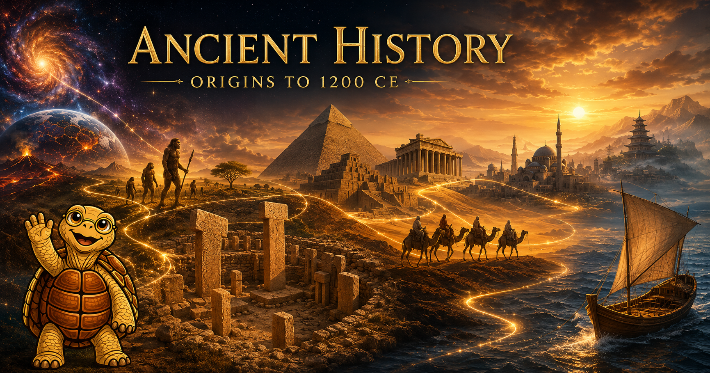

Ancient History: Origins to 1200 CE

Welcome to Ancient History: Origins to 1200 CE — a textbook that takes you from the first microseconds of the universe to the eve of the Mongol conquests, and tries to make every step of that journey genuinely interesting.
What this textbook is
This course surveys the full sweep of human experience from cosmic origins through the maturation of post-classical civilizations, organized around the UCLA "World History for Us All" Big Era framework (Eras 1–5) and three thematic axes — Humans and the Environment, Humans and Other Humans, and Humans and Ideas — that run through every chapter.
The accompanying learning graph is a directed graph of 297 concepts that treats recent archaeological, paleoanthropological, and paleogenomic discoveries — Göbekli Tepe, Lomekwi 3, the Jebel Irhoud finds, ancient-DNA Yamnaya migration, the Sulawesi cave paintings, and more — as first-class nodes rather than footnotes to a 1990s narrative.
Four superpowers you will gain
Studying ancient history is not just an exercise in memorizing names and dates. It is superpower acquisition:
- Critical thinking — distinguishing claims from evidence and weighing competing interpretations.
- Systems thinking — seeing how environment, trade, religion, and politics interact to produce cascading change.
- Positive skepticism — the habit of asking "how do we know this?" before accepting or sharing a claim.
- Bias and misinformation detection — recognizing point-of-view and selective framing in both ancient and modern sources.
The same analytical moves that work on cuneiform tablets work on your social-media feed. Chronos the Tortoise will remind you of this at key moments throughout the text.
Chapters
| Era | Chapter | Topic |
|---|---|---|
| — | 1. Foundations of Historical Thinking | Evidence, periodization, and the historian's toolkit |
| Big Era 1 | 2. Cosmic and Biological Origins | From the Big Bang to the emergence of life |
| Big Era 2 | 3. Hominin Evolution and the Genus Homo | Seven million years of becoming human |
| Big Era 2 | 4. Paleolithic Migrations and Ice-Age Worlds | Out of Africa and across the globe |
| Big Era 2 | 5. Paleolithic Symbolic Culture and Other Hominins | Cave art, cognition, and our vanished cousins |
| Big Era 3 | 6. The Neolithic Revolution | Agriculture, villages, and the invention of everything that followed |
| Big Era 3 | 7. Bronze Age Mesopotamia and Egypt | The first cities, writing, and riverine civilizations |
| Big Era 3–4 | 8. Bronze Age Asia, the Aegean, and Collapse | International systems and the Late Bronze Age crash |
| Big Era 4 | 9. The Iron Age and the Greco-Roman World | Polis, republic, and empire |
| Big Era 4 | 10. The Axial Age and World Religions | When the world's great ethical traditions were born |
| Big Era 4 | 11. Classical Empires of Asia | Han China, Maurya and Gupta India, Silk Road |
| Big Era 5 | 12. Late Antiquity and Byzantium | Rome transforms, Constantinople endures |
| Big Era 5 | 13. The Rise of Islam | Revelation, conquest, and the Abbasid Golden Age |
| Big Era 5 | 14. Tang–Song China and Carolingian Europe | Two renaissance moments, half a world apart |
| Big Era 5 | 15. Afro-Eurasian Networks | Trans-Saharan gold, Indian Ocean dhows, Silk Road caravans |
| Bridge | 16. Pre-Columbian Americas and the Eve of Integration | Cahokia, Maya, Chaco, and the world circa 1200 CE |
Also available
- Course Description — full syllabus with learning outcomes organized by Bloom's taxonomy.
- Learning Graph — the 297-concept directed graph with quality metrics and taxonomy distribution.
- Learning Graph Viewer — interactive, searchable, filterable graph exploration.
- Glossary — key terms and definitions.
How to navigate
Use the left sidebar to browse by chapter, or jump straight to the interactive learning graph viewer to explore concept dependencies visually. Each chapter opens with a welcome from Chronos, your guide for the long view.